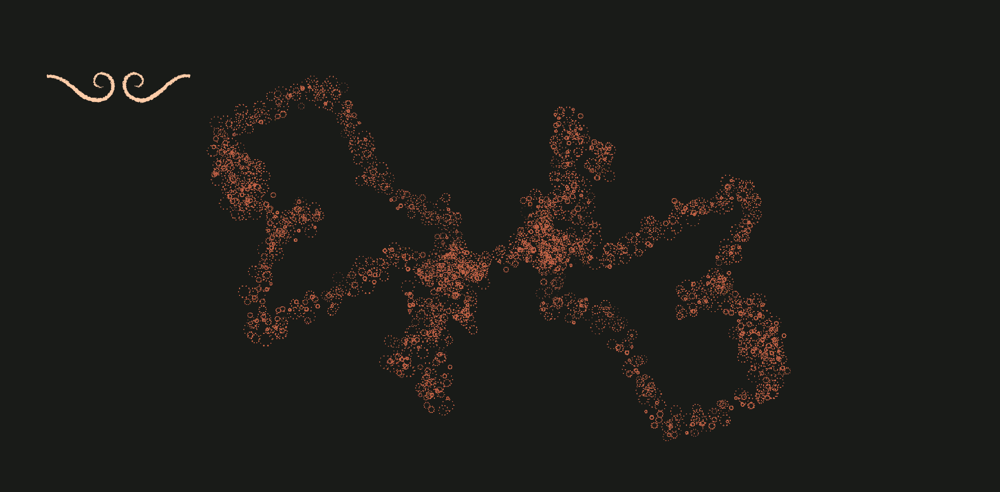
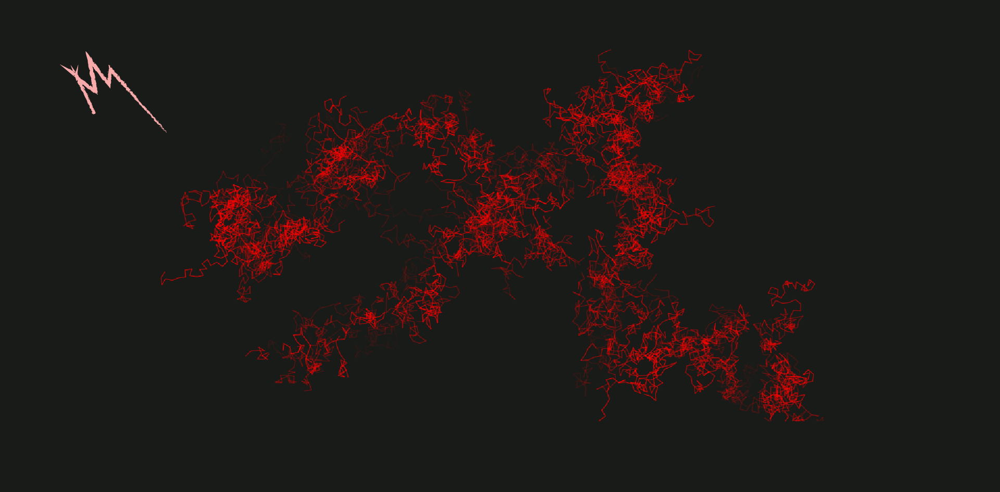
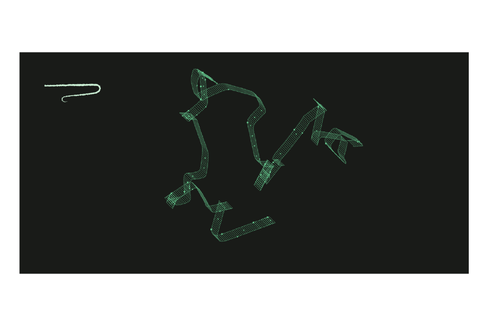
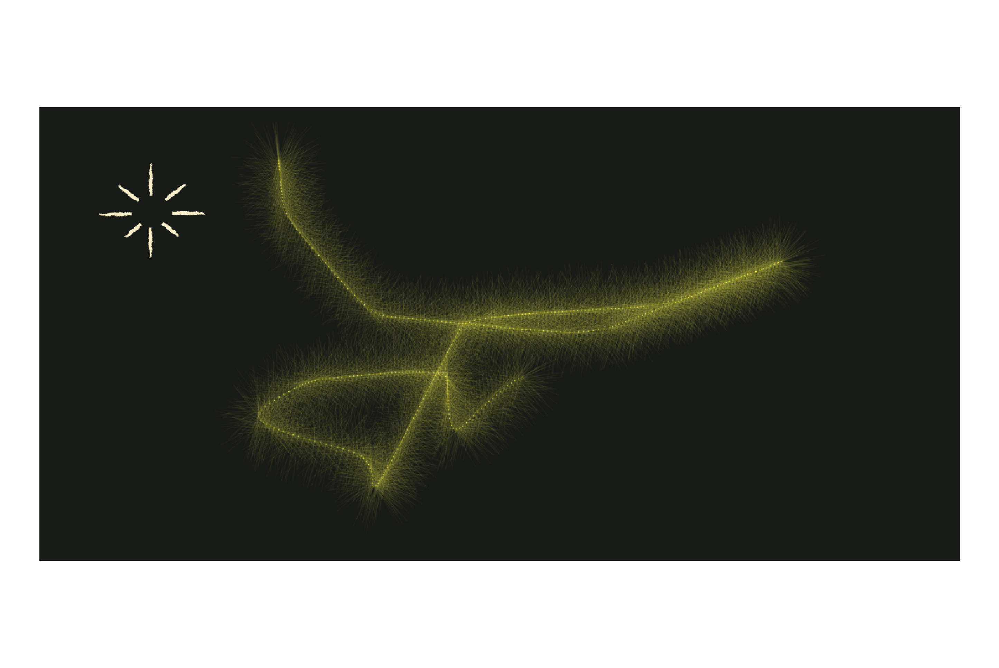
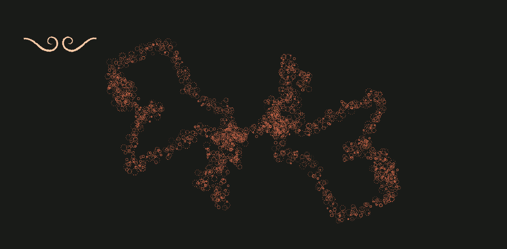
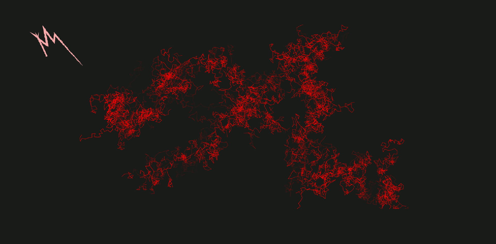
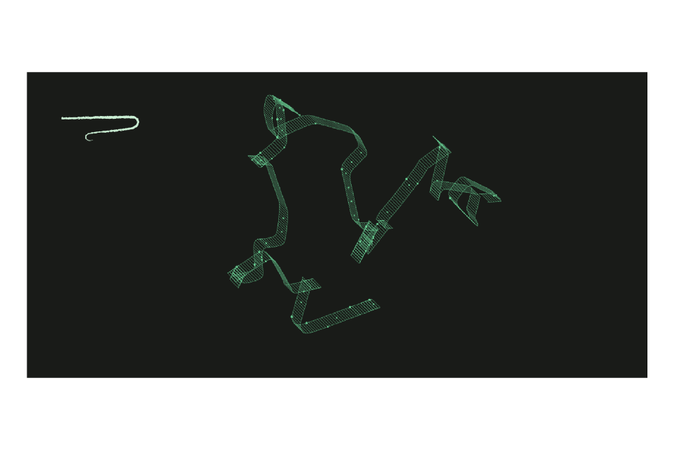
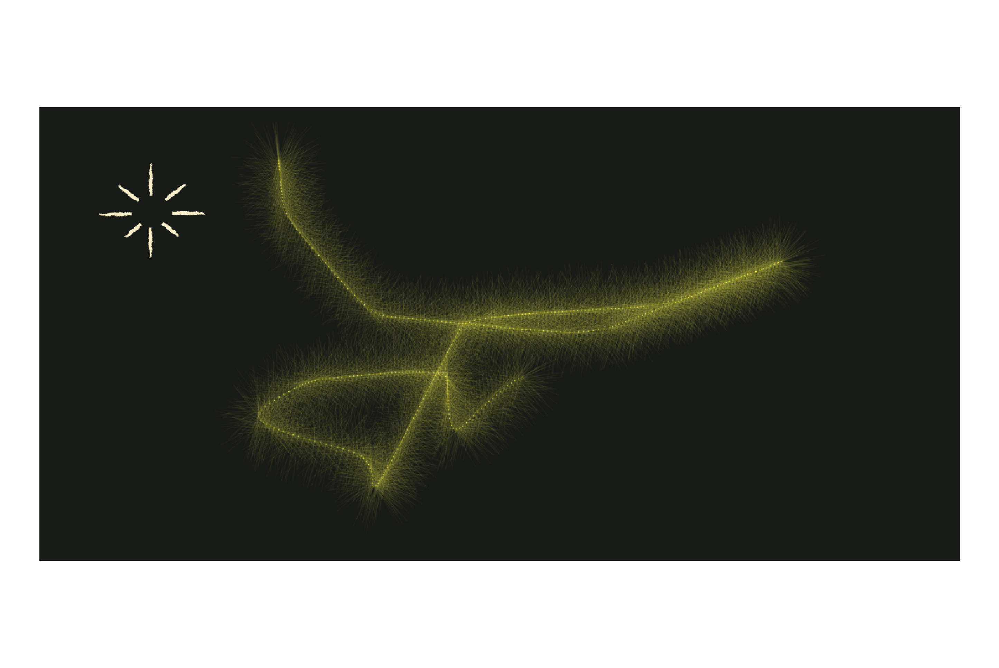

Interaction Design
Web Design
2022


CONTEXT
Academic Project — LDM
Collaboration with Fábio Gouveia and Marcelo Coelho
ADVISED BY
Luís Lucas Pereira,
Paula Silva
Interactive experience, activated by the user's mobile device, with imagetic expression of the exploration of emotions.
Tool with interaction from the user's mobile device that can be connected to the website on a computer. Several users can connect in the same room where they will be able to manipulate the brushes selected on the website's home page.
TOOLS/LANGUAGES
HTML, CSS, JavaScript, PHP, WebSockets, p5.js, Node.js, mySQL

 






